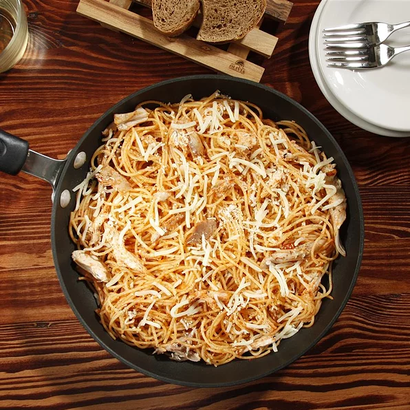

Spaghetti with Chicken, Parmesan and Mozzarella

Description
A great way to enjoy spaghetti. Parmesan and Mozzarella deliciously complement the rotisserie chicken.
Prep:
10 mins
Cook:
5 mins
Total:
15 mins
Servings:
6
Yield:
6 servings
Ingredients
- 1 box Barilla® Pronto™ Spaghetti
- 1 cup chicken broth
- 2 tablespoons extra virgin olive oil
- ½ cup Barilla® Tomato & Basil Sauce
- 2 teaspoons oregano, dried
- ½ cup mozzarella cheese, shaved
- 1 1/2 cups rotisserie chicken, shredded
- ½ cup Parmigiano Reggiano cheese, shaved
- Salt and black pepper to taste
Steps
- POUR whole box of pasta into a large skillet (approximately 12 inches in diameter).
- POUR 1 1/2 cups of cold water and chicken broth into the pan, ensuring that the liquid covers the pasta.
- Turn the burner to high, then set your timer for 10 minutes (optional: add a bit of salt to taste).
- COOK on high, stirring occasionally, until 3/4 of the liquid has evaporated.
- ADD Barilla® Tomato & Basil sauce, oregano, mozzarella, and rotisserie chicken to skillet and continue to COOK for approximately 2 minutes.
- REMOVE skillet from heat and STIR Parmigiano-Reggiano and black pepper.
- Serve immediately.